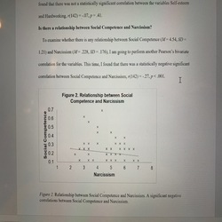
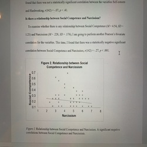
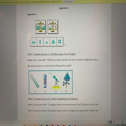
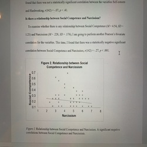
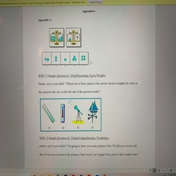

Macey Genuino
My name is Macey Genuino. I am currently a third-year Psychology major at the University of California, Riverside. I am genuinely interested in pursuing a career in becoming a therapist, mainly focusing on the physical abilities of our body. To do this, I have decided to prepare myself by learning all about the functions and concepts about the entire human body. Learning about the human anatomy has always been one of the most interesting concepts that seems to fascinate me. I am in the process of involving myself with joining a few research studies at the University of California Riverside that may involve going more in depth about the causes and functions in the human body. Through these experiences, it will allow me to work with patients and help them with their needs by giving them methods that will benefit them in their lifetime.
Before deciding to fully pursue this career, I had a few experiences that allowed me to realize that this was what I wanted to do as a career. In high school, I was able to take human anatomy for a class. In this class, we were able to dissect animals. I was able to learn about the muscles, bones, and other components in the human body. These activities were very beneficial. Aside from taking these classes, I was involved in an organization in which we were able to cooperate with one another. This organization is known as Medical Assisting. In this organization, it allowed me to communicate and work with others which is very beneficial for becoming a therapist. This organization was quite beneficial because it prepared me to experience how it is like to work with your peers and in becoming a therapist, you need to be able to know how to communicate clearly and work together with your peers and patients. We did activities in pretending that one is the patient and one is the therapist/assistant. During these activities, we were learning how to properly care for the patient’s physical abilities and doing different types of exercises and methods guided by an instructor.
While attending University of California Riverside, being a Psychology major has exposed me to go more in depth with the concepts of the human anatomy. I was able to learn new concepts and helped me apply my ideas for my future career. Not only did these classes help, the research organizations have also helped me progress my experiences with the human body. For example, in these organizations, I was able to contribute to their studies in which they have experimented on me to help better understand a few concepts and functions that happen in our body. These organizations include learning and studying about the physical functions and emotions that we experience every day. Going into my fourth year, I hope that I can apply everything I have learned into getting a master’s degree in physical or occupational therapist. With these experiences, I hope to grow and improve these exercises and concepts.
Experience
Caregiver
• Regularly looked after an elderly
• Assisting with Meals and Nutrition
• Housekeeping
• Also looked after disabled person
Education
UC Riverside
Portfolio
.jpg) 


.jpg)

